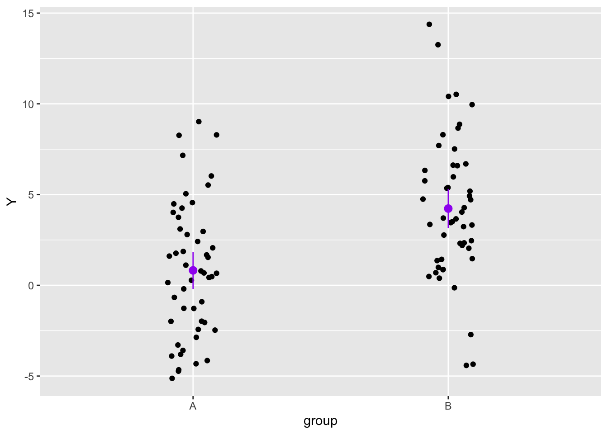

library(tidyverse)
# Set seed for reproducibility
set.seed(707)
# Observations per group
n_per_group <- 50
group <- rep(c("A", "B"), each = n_per_group)
true_diff <- 4
error_sd <- 4
data <- tibble(
group = rep(c("A", "B"), each = n_per_group),
Y = c(
# Group A
rnorm(n_per_group, mean = 0, sd = error_sd),
# Group B
rnorm(n_per_group, mean = true_diff, sd = error_sd)
)
)
dataWhen frequentist null-ritualistic and Bayesian regression give you opposite results
Learn of the dangers of the null ritual in the context of regression models
Are there cases when a frequentist null-ritualistic and a Bayesian regression give opposite results in regression models? YES!
In the following example, we simulate data from two groups, A and B. In the population which A and B are sampled from, there is no difference between the two groups.
In our simulated sample, however, the mean of group A is 0 and that of group B is 4. This is clearly a quirk of the sample, since the mean of A and B should be the same.
Let’s say that our measurements contain some error, for example due to equipment limitations. We know that the measurement error of the equipment, based on the manufacturer’s specification, is ±5. In the simulated data, we add random error to the observations (50 per group). Error is usually modelled as a Gaussian distribution with mean 0 and a specific standard deviation: here, we set the standard deviation (error_sd) to 4.
Let’s plot the data.
data |>
ggplot(aes(group, Y)) +
geom_jitter(width = 0.1) +
# Mean with 95% CIs
stat_summary(fun.data = function(x) mean_se(x, 1.96), colour = "purple")
We know that the difference we see in the sample is due to error, not to a real difference between A and B.
Now, let’s run a frequentist (null-ritualistic) regression with lm().
lm_model <- lm(Y ~ group, data = data)
summary(lm_model)
Call:
lm(formula = Y ~ group, data = data)
Residuals:
Min 1Q Median 3Q Max
-8.6422 -2.8030 -0.2708 2.3026 10.1506
Coefficients:
Estimate Std. Error t value Pr(>|t|)
(Intercept) 0.8227 0.5373 1.531 0.129
groupB 3.4069 0.7598 4.484 1.99e-05 ***
---
Signif. codes: 0 '***' 0.001 '**' 0.01 '*' 0.05 '.' 0.1 ' ' 1
Residual standard error: 3.799 on 98 degrees of freedom
Multiple R-squared: 0.1702, Adjusted R-squared: 0.1618
F-statistic: 20.11 on 1 and 98 DF, p-value: 1.993e-05If you look at the p-value of groupB, it is lower than 0.05, so according to this model there is a significant difference between A and B.
Let’s now fit a Bayesian regression.
library(brms)
brm_model <- brm(
Y ~ group,
data = data,
seed = 707, file = "cache/regression-freq-bayes_brm_model"
)
summary(brm_model) Family: gaussian
Links: mu = identity; sigma = identity
Formula: Y ~ group
Data: data (Number of observations: 100)
Draws: 4 chains, each with iter = 2000; warmup = 1000; thin = 1;
total post-warmup draws = 4000
Regression Coefficients:
Estimate Est.Error l-95% CI u-95% CI Rhat Bulk_ESS Tail_ESS
Intercept 0.82 0.53 -0.22 1.85 1.00 3936 2966
groupB 3.39 0.77 1.91 4.86 1.00 3900 3033
Further Distributional Parameters:
Estimate Est.Error l-95% CI u-95% CI Rhat Bulk_ESS Tail_ESS
sigma 3.82 0.28 3.34 4.41 1.00 3427 2615
Draws were sampled using sampling(NUTS). For each parameter, Bulk_ESS
and Tail_ESS are effective sample size measures, and Rhat is the potential
scale reduction factor on split chains (at convergence, Rhat = 1).Look at the 95% CrI of groupB: it’s [1.91, 4.86].
Above we said that the equipment error is ±5. This can be thought of as a “Region of Practical Equivalence” (ROPE): any difference greater than or equal to -5 and smaller than or equal to +5 is practically equivalent to “no difference”, since we know that the equipment is not sensitive enough to be able to record differences that are within that range.
The CrI of groupB is fully within the ROPE [-5, +5]. Thus, based on the Bayesian model we (correctly) infer that there is no difference in A and B in the population we sampled from.
To summarise, the frequentist model incorrectly reported a significant difference, while we know the population does not have this difference.